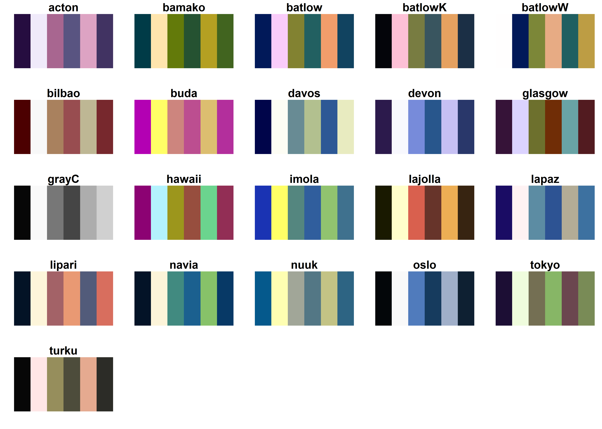
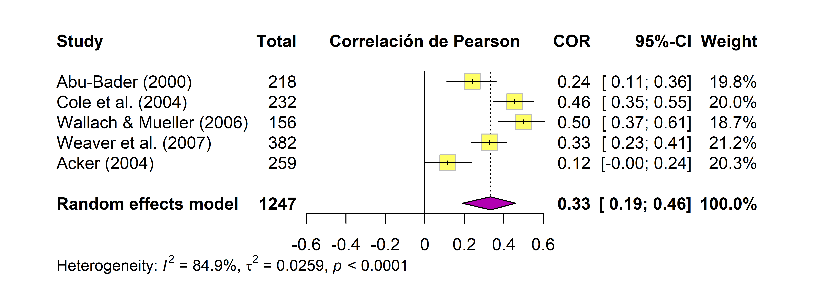
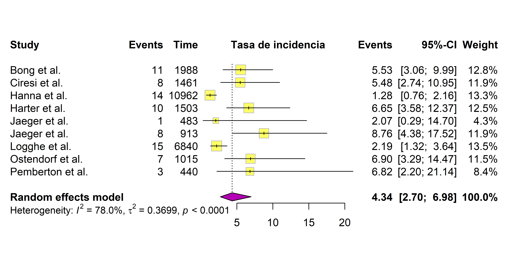
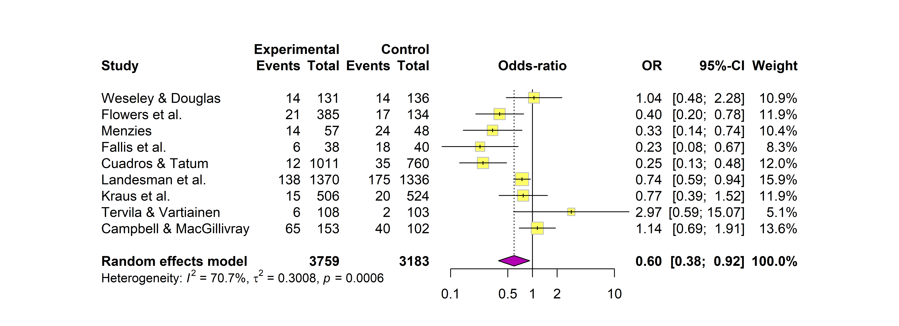
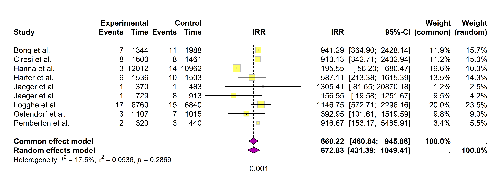

library(meta)Estudios descriptivos y analíticos
© 2025 Instituto Nacional de Epidemiología “Dr. Juan H. Jara” (ANLIS) - CC BY-NC 4.0


Meta-análisis de estudios descriptivos
En los estudios descriptivos, las principales medidas de resumen incluyen la correlación, la prevalencia y la tasa de incidencia. A continuación, presentamos ejemplos prácticos de ajuste de modelos para cada una de ellas.
Comenzaremos por cargar el paquete meta:
En secciones previas, exploramos cómo personalizar los colores de los forest plots con los argumentos col.diamond y col.square. Para garantizar que los gráficos sean accesibles a personas con dificultades en la percepción del color, utilizaremos la paletas colorblind-friendly del paquete scico (Pedersen y Crameri 2023):
# Instalar paquete (solo una vez por computadora)
# install.packages("scico")
# Cargar paquete
library(scico)
# Lista de paletas categóricas
scico_palette_show(categorical = TRUE)
En los ejemplos siguientes, emplearemos la paleta "buda", que genera un gradiente discreto de colores entre magenta y amarillo: (más información aquí):
# Paleta colorblind-friendly
pal <- scico(n = 2, palette = "buda")Correlaciones
Las correlaciones miden la fuerza y dirección de la relación entre dos variables numéricas continuas, calculándose como:
\[ r_{xy} = \frac{Cov_{xy}}{S_xS_y} \]
donde:
\(Cov_{xy}\) es la covarianza entre las variables X e Y.
\(S_x\) y \(S_y\) son los desvíos estándar de cada variable.
Dado que los coeficientes de correlación solamente toman valores entre -1 y 1, su distribución no es simétrica, pudiendo afectar la estimación del error estándar en muestras pequeñas. Para corregir este sesgo y estabilizar la varianza, se utiliza la transformación z de Fisher.
La función metacor() del paquete meta ajusta modelos de meta-análisis para correlaciones y aplica automáticamente esta transformación mediante el argumento sm = "ZCOR".
Como ejemplo, usaremos la base de datos dat.aloe2013, que contiene resultados de cinco estudios sobre la correlación entre condiciones laborales y salud mental en asistentes sociales infantiles:
# Cargar datos
datos <- dat.aloe2013
# Ajustar modelo de meta-análisis para correlaciones
mod_cor <- metacor(
cor = R2, # Coeficiente de correlación
n = n, # Tamaño de la muestra
studlab = study, # Identificador del estudio
data = datos, # Conjunto de datos
sm = "ZCOR", # Transformación z de Fisher
common = TRUE, # Modelo de efectos fijos
random = TRUE # Modelo de efectos aleatorios
)
# Resumen del modelo ajustado
mod_corNumber of studies: k = 5
Number of observations: o = 1247
COR 95%-CI z p-value
Common effect model 0.3195 [0.2685; 0.3687] 11.62 < 0.0001
Random effects model 0.3320 [0.1903; 0.4602] 4.44 < 0.0001
Quantifying heterogeneity (with 95%-CIs):
tau^2 = 0.0259 [0.0064; 0.2528]; tau = 0.1608 [0.0800; 0.5028]
I^2 = 84.9% [66.3%; 93.2%]; H = 2.57 [1.72; 3.84]
Test of heterogeneity:
Q d.f. p-value
26.44 4 < 0.0001
Details of meta-analysis methods:
- Inverse variance method
- Restricted maximum-likelihood estimator for tau^2
- Q-Profile method for confidence interval of tau^2 and tau
- Calculation of I^2 based on Q
- Fisher's z transformation of correlationsLos resultados indican una correlación positiva moderada entre condiciones laborales y salud mental \((r = 0,33, 95\%~IC: 0,19-0,46)\), con alta heterogeneidad estadística \((I^2 = 84,9\%)\), sugiriendo diferencias importantes entre los estudios incluidos.
Para visualizar los resultados, generamos un forest plot usando el siguiente código:
forest(
mod_cor,
smlab = "Correlación de Pearson",
col.diamond = pal[1], # Magenta
col.square = pal[2], # Amarillo
common = FALSE # Omite modelo de efectos fijos
)
Prevalencia
La prevalencia representa la proporción de individuos con un evento de interés dentro de una población:
\[ p = \frac{k}{n} \]
donde:
\(k\) es el número de individuos con la condición/evento.
\(n\) es el tamaño total de la población o muestra.
Dado que las proporciones pueden estar cercanas a los valores extremos (0 o 1), su distribución es asimétrica, lo que afecta el cálculo del error estándar. Para corregir este problema, se aplica una transformación logit a los datos.
La función metaprop() del paquete meta permite ajustar modelos para prevalencias e incorpora automáticamente esta transformación con el argumento sm = "PLOGIT".
Para ejemplificar, usaremos la base de datos dat.crisafulli2020, que contiene 26 estudios sobre la prevalencia de la distrofia muscular de Duchenne en recién nacidos:
# Cargar datos
datos <- dat.crisafulli2020
# Ajustar modelo de meta-análisis para prevalencia
mod_prev <- metaprop(
event = cases, # Casos observados
n = total, # Tamaño de la muestra
studlab = study, # Identificador del estudio
data = datos, # Conjunto de datos
sm = "PLOGIT", # Transformación logit
common = TRUE, # Modelo de efectos fijos
random = TRUE, # Modelo de efectos aleatorios
backtransf = TRUE, # Convertir resultados a proporciones
pscale = 100 # Expresar prevalencias como porcentaje
)
# Salida del modelo ajustado
mod_prevNumber of studies: k = 26
Number of observations: o = 6831388
Number of events: e = 1545
events 95%-CI
Common effect model 0.0226 [0.0215; 0.0238]
Random effects model 0.0222 [0.0206; 0.0240]
Quantifying heterogeneity (with 95%-CIs):
tau^2 = 0.0126; tau = 0.1121; I^2 = 33.2% [0.0%; 58.6%]; H = 1.22 [1.00; 1.55]
Test of heterogeneity:
Q d.f. p-value
Wald 37.41 25 0.0527
LRT 39.01 25 0.0368
Details of meta-analysis methods:
- Random intercept logistic regression model
- Maximum-likelihood estimator for tau^2
- Calculation of I^2 based on Q
- Logit transformation
- Events per 100 observationsComo la prevalencia es baja, podemos expresarla en casos por 100 000 habitantes modificando el argumento pscale. Además, la heterogeneidad estadística es alta, por lo que se puede omitir el modelo de efectos fijos.
Generamos el forest plot con el siguiente código:
forest(
mod_prev,
smlab = "Prevalencia (por 100 000 hab.)",
leftcols = "studlab", # Muestra solamente el identificador de estudio
col.diamond = pal[1], # Magenta
col.square = pal[2], # Amarillo
pscale = 100000, # Escala a 100 000 habitantes
common = FALSE # Omite modelo de efectos fijos
)
Tasa de incidencia
La tasa de incidencia se utiliza para eventos que ocurren a lo largo del tiempo y se define como:
\[ IR = \frac {k}{T} \]
donde:
\(k\) es el número de eventos observados.
\(T\) es la suma del tiempo-persona en riesgo en cada estudio.
Dado que las tasas de incidencia pueden ser pequeñas y presentar asimetría, se recomienda aplicar una transformación logarítmica a los datos para estabilizar su varianza.
La función metarate() ajusta modelos de meta-análisis para tasas de incidencia, aplicando esta transformación (sm = "IRLN").
Como ejemplo, usamos la base dat.nielweise2008, que contiene 9 estudios sobre la incidencia de infecciones sanguíneas asociadas al uso de catéteres:
# Cargar datos
datos <- dat.nielweise2008
# Ajustar modelo de meta-análisis para tasas de incidencia
mod_ir <- metarate(
event = x2i, # Casos observados
time = t2i, # Tiempo-persona en riesgo
studlab = authors, # Identificador del estudio
data = datos, # Conjunto de datos
sm = "IRLN", # Transformación logarítmica
common = TRUE, # Modelo de efectos fijos
random = TRUE, # Modelo de efectos aleatorios
irscale = 1, # Tasas por años-persona
irunit = "años-persona" # Etiqueta para la unidad de tiempo-persona
)Podemos presentar el forest plot en escala de 1000 años-persona usando el siguiente código:
forest(
mod_ir,
smlab = "Tasa de incidencia",
col.diamond = pal[1], # Magenta
col.square = pal[2], # Amarillo
irscale = 1000, # Expresión en 1000 años-persona
common = FALSE # Omite modelo de efectos fijos
)
Meta-análisis de estudios analíticos
Dentro de los estudios analíticos (observacionales y/o experimentales), las medidas de asociación más utilizadas para comparar grupos son la diferencia de medias, el odds-ratio, el riesgo relativo y la razón de tasas de incidencia. A continuación, se describe cómo ajustar modelos de meta-análisis para cada una de ellas usando el paquete meta.
Diferencia de medias
La diferencia de medias entre dos grupos de exposición se define como:
\[ MD = \bar{x_1} - \bar{x_2} \]
donde:
\(\bar{x_1}\) es la media muestral del grupo expuesto o tratado.
\(\bar{x_2}\) es la media muestral del grupo no expuesto o control.
El cálculo de la diferencia de medias requiere que todas las mediciones se hayan tomado en la misma escala. Para los modelos de meta-análisis, se utiliza la diferencia de medias estandarizada, que elimina la dependencia de las unidades de medición al ponderar por el desvío estándar.
En meta, la función metacont() ajusta modelos de meta-análisis para diferencias de medias estandarizadas con el argumento sm = "SMD".
Como ejemplo, utilizaremos la base de datos dat.furukawa2003, que contiene resultados de 17 estudios sobre la efectividad de la dosis de antidepresivos tricíclicos en casos de depresión severa:
# Carga datos
datos <- dat.furukawa2003
# Modelo de meta-análisis para diferencia de medias
mod_mdif <- metacont(
n.e = Ne, # Tamaño muestra grupo expuestos
mean.e = Me, # Media en grupo expuestos
sd.e = Se, # Desvío estándar en grupo expuestos
n.c = Nc, # Tamaño muestra grupo control
mean.c = Mc, # Media en grupo control
sd.c = Sc, # Desvío estándar en grupo control
studlab = author, # Identificador del estudio
data = datos, # Conjunto de datos
sm = "SMD", # Diferencia de medias estandarizada
common = TRUE, # Modelo de efectos fijos
random = TRUE, # Modelo de efectos aleatorios
)
# Resumen del modelo ajustado
mod_mdifNumber of studies: k = 17
Number of observations: o = 902 (o.e = 479, o.c = 423)
SMD 95%-CI z p-value
Common effect model -0.3918 [-0.5286; -0.2551] -5.62 < 0.0001
Random effects model -0.6056 [-0.9326; -0.2787] -3.63 0.0003
Quantifying heterogeneity (with 95%-CIs):
tau^2 = 0.3415 [0.1422; 1.1791]; tau = 0.5844 [0.3771; 1.0859]
I^2 = 72.6% [55.5%; 83.1%]; H = 1.91 [1.50; 2.43]
Test of heterogeneity:
Q d.f. p-value
58.38 16 < 0.0001
Details of meta-analysis methods:
- Inverse variance method
- Restricted maximum-likelihood estimator for tau^2
- Q-Profile method for confidence interval of tau^2 and tau
- Calculation of I^2 based on Q
- Hedges' g (bias corrected standardised mean difference; using exact formulae)La diferencia de medias estandarizada entre el grupo tratado y el grupo control es estadísticamente significativa \((p<0,001)\) y presenta alta heterogeneidad \((I^2 = 73,8\%)\), por lo que puede descartarse el modelo de efectos fijos.
El siguiente código genera un forest plot para la diferencia de medias estandarizada:
forest(
mod_mdif,
smlab = "Diferencia de medias",
col.diamond = pal[1], # Magenta
col.square = pal[2], # Amarillo claro
common = FALSE # Omite modelo de efectos fijos
)
Odds-ratio
El odds-ratio (OR) o razón de productos cruzados se define como:
\[ OR = \frac{a/b}{c/d} \]
donde:
\(a\) es el número de eventos en el grupo expuesto/tratamiento.
\(b\) es el número de individuos que no presentan el evento en el grupo expuesto/tratamiento.
\(c\) es el número de eventos en el grupo no expuesto/control.
\(d\) es el número de individuos que no presentan el evento en el grupo no expuesto/control.
El OR solo puede tomar valores positivos \((0-\infty)\), donde:
\(OR = 1\) indica ausencia de efecto.
\(OR >1\) indica un incremento en las probabilidades de ocurrencia del evento.
\(OR < 1\) indica un posible efecto protector.
Esto genera una distribución asimétrica y dificulta el análisis estadístico. Para estabilizar la varianza y obtener una distribución aproximadamente normal, se utiliza la transformación logarítmica.
La función metabin() ajusta modelos de meta-análisis para OR con la transformación logarítmica incluida automáticamente usando el argumento sm = "OR", e incorpora una una corrección de continuidad para efectos con valores de 0.
El siguiente ejemplo utiliza la base de datos dat.collins1985b, que contiene información de 9 estudios sobre el efecto de los diuréticos en la prevención de preeclampsia:
# Carga datos
datos <- dat.collins1985b
# Modelo de meta-análisis para OR
mod_or <- metabin(
event.e = pre.xti, # Eventos en el grupo expuesto/tratamiento
n.e = pre.nti, # Tamaño muestral en el grupo expuesto/tratamiento
event.c = pre.xci, # Eventos en el grupo no expuesto/control
n.c = pre.nci, # Tamaño muestral en el grupo control
studlab = author, # Identificador único de cada estudio
data = datos, # Conjunto de datos
sm = "OR", # Odds-ratio
common = TRUE, # Modelo de efectos fijos
random = TRUE # Modelo de efectos aleatorios
)
# Resumen del modelo ajustado
mod_orNumber of studies: k = 9
Number of observations: o = 6942 (o.e = 3759, o.c = 3183)
Number of events: e = 636
OR 95%-CI z p-value
Common effect model 0.6677 [0.5620; 0.7932] -4.60 < 0.0001
Random effects model 0.5956 [0.3843; 0.9233] -2.32 0.0205
Quantifying heterogeneity (with 95%-CIs):
tau^2 = 0.3008 [0.0723; 2.2027]; tau = 0.5484 [0.2689; 1.4842]
I^2 = 70.7% [41.8%; 85.2%]; H = 1.85 [1.31; 2.60]
Test of heterogeneity:
Q d.f. p-value
27.26 8 0.0006
Details of meta-analysis methods:
- Mantel-Haenszel method (common effect model)
- Inverse variance method (random effects model)
- Restricted maximum-likelihood estimator for tau^2
- Q-Profile method for confidence interval of tau^2 and tau
- Calculation of I^2 based on QEl OR combinado sugiere que el uso de diuréticos reduce las probabilidades de preeclampsia en comparación con el grupo control \((p = 0,021)\). La heterogeneidad estadística es alta \((I^2 = 70,7\%)\), por lo que descartamos el modelo de efectos fijos.
Generamos el forest plot:
forest(
mod_or,
smlab = "Odds-ratio",
col.diamond = pal[1], # Magenta
col.square = pal[2], # Amarillo
common = FALSE # Omitir modelo de efectos fijos
)
Riesgo relativo
El riesgo relativo (RR) o risk ratio expresa la razón entre las probabilidades de desarrollar un evento en el grupo expuesto y en el grupo control:
\[ RR = \frac{a/(a + b)}{c/(c + d)} \]
donde los términos tienen el mismo significado que en el OR.
Al igual que el OR, el RR es una medida asimétrica con valores positivos \((0-\infty)\). Para estabilizar la varianza y mejorar la interpretación estadística, se usa la transformación logarítmica. Esta transformación permite modelar el RR en un intervalo simétrico y facilita la interpretación de los resultados.
La función metabin() permite calcular RR con sm = "RR", aplicando la transformación logarítmica automáticamente. Debido a la similitud en el cálculo respecto al OR, omitiremos el ejemplo para esta medida de asociación.
Razón de tasas de incidencia
La razón de tasas de incidencia (incidence rate ratio, IRR) compara la frecuencia de eventos en dos grupos considerando el tiempo-persona de exposición:
\[ IRR = \frac{IR_e}{IR_c} \]
donde:
\(IR_e\) es la tasa de incidencia en el grupo expuesto/tratamiento.
\(IR_c\) es la tasa de incidencia en el grupo no expuesto/control.
Al igual que para la tasa de incidencia, se recomienda realizar la transformación logarítmica de los datos para aproximarlos a una distribución normal.
En meta, la función metainc() ajusta modelos de IRR con sm = "IRR", aplicando automáticamente la transformación logarítmica.
A modo de ejemplo, usaremos nuevamente la base dat.nielweise2008, esta vez comparando entre grupo de exposición y control:
# Carga datos
datos <- dat.nielweise2008
# Modelo de meta-análisis para IRR
mod_irr <- metainc(
event.e = x1i, # Casos observados en grupo expuesto/tratamiento
time.e = t1i, # Tiempo-persona en grupo expuesto/tratamiento
event.c = x2i, # Casos observados en grupo no expuesto/control
time.c = t2i, # Tiempo-persona en grupo no expuesto/control
studlab = authors, # Identificador único de cada estudio
data = datos, # Conjunto de datos
sm = "IRR", # Razón de tasas de incidencia
common = TRUE, # Modelo de efectos fijos
random = TRUE, # Modelo de efectos aleatorios
irscale = 1, # Tasas por años-persona
irunit = "años-persona" # Etiqueta para la unidad de tiempo-persona
)
# Resumen del modelo ajustado
mod_irrNumber of studies: k = 9
Number of events: e = 125
IRR 95%-CI z p-value
Common effect model 0.6602 [0.4608; 0.9459] -2.26 0.0236
Random effects model 0.6728 [0.4314; 1.0494] -1.75 0.0806
Quantifying heterogeneity (with 95%-CIs):
tau^2 = 0.0936 [0.0000; 1.4845]; tau = 0.3060 [0.0000; 1.2184]
I^2 = 17.5% [0.0%; 59.5%]; H = 1.10 [1.00; 1.57]
Test of heterogeneity:
Q d.f. p-value
9.70 8 0.2869
Details of meta-analysis methods:
- Mantel-Haenszel method (common effect model)
- Inverse variance method (random effects model)
- Restricted maximum-likelihood estimator for tau^2
- Q-Profile method for confidence interval of tau^2 and tau
- Calculation of I^2 based on QLos resultados del modelo muestran que existe una disminución en el riesgo del evento en el grupo tratado comparado con el control, significativa en el modelo de efectos fijos \((p = 0,24)\) pero no en el de efectos aleatorios \((p = 0,81)\), con baja heterogeneidad estadística \((I^2 = 17,5\%)\).
Con el siguiente código obtenemos el forest plot expresado en 1000 años-persona:
forest(
mod_irr,
smlab = "IRR",
col.diamond = pal[1], # Magenta
col.square = pal[2], # Amarillo
irscale = 1000 # Expresión en 1000 años-persona
)
Debido a la extensión del curso, nos enfocaremos exclusivamente en la implementación en R de los modelos para cada medida de asociación. Quienes deseen profundizar en el desarrollo matemático de estos modelos pueden consultar los capítulos 3 y 4.2 de Harrer et al. (2021).
Actualmente, el paquete meta no incluye funciones específicas para modelar el tiempo hasta el evento (hazard ratio, HR). Sin embargo, si los estudios reportan el log-HR y su error estándar, es posible utilizar la función metagen() con el argumento sm = "HR" para obtener una estimación combinada del efecto.
Referencias
Harrer, Mathias, Pim Cuijpers, Toshi A Furukawa, y David D Ebert. 2021. Doing Meta-Analysis With R: A Hands-On Guide. Boca Raton, FL; London: Chapman & Hall/CRC Press. https://www.routledge.com/Doing-Meta-Analysis-with-R-A-Hands-On-Guide/Harrer-Cuijpers-Furukawa-Ebert/p/book/9780367610074.
Pedersen, Thomas Lin, y Fabio Crameri. 2023. «scico: Colour Palettes Based on the Scientific Colour-Maps». https://CRAN.R-project.org/package=scico.